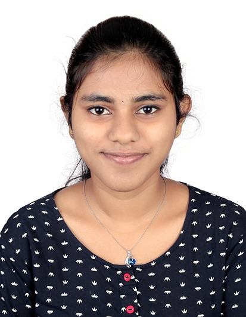

Shalini Durai Murugan

Summary
- Highly motivated and adaptable individual with a strong desire to contribute to the technology sector. Eager to learn and apply new technologies, with a focus on continuous professional development. Seeking an entry-level position to gain practical experience and contribute to innovative projects
- Quick learner with a strong desire for continuous improvement. Eager to acquire new skills,knowledge and apply them in a practical setting. Seeking an entry-level position to gain hands-on experience and contribute to a dynamic team.
Education
- Currently pursuing 2nd year of B.Tech Computer Science Engineering from Indian Institute of Information and Technology.
Graduation year:2027
- HSSC:Velammal Vidayalaya Melaynambakkam
Graduation year:2023
Percentage:93.2%
- SSEC:Chennai Public School
Graduation year:20231
Percentage:94.6%
Work Experience
A fresher and not much experienced but would love to contribute if given the opportunitites
Skills
- Technical languages:C/C++,Java,Python,HTML,CSS,Javascript,Php
Other Accomplishments:
More About me
Contact Details